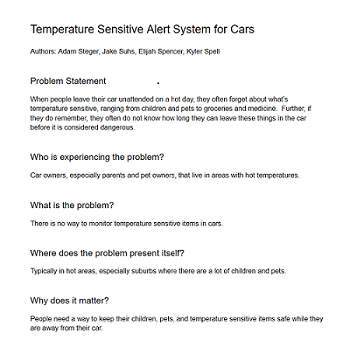
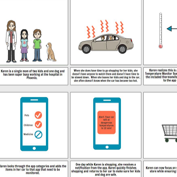
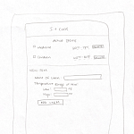
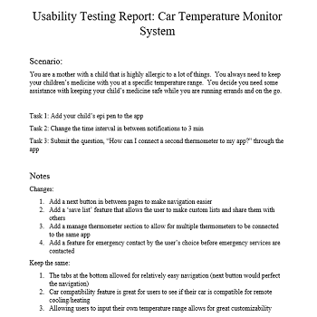
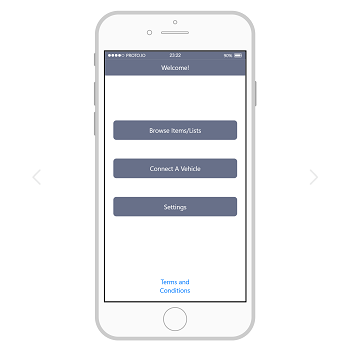
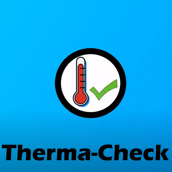

Problem Statement: Therma-Check
When people leave their car unattended on a hot day, they often forget about what’s temperature sensitive, ranging from children and pets to groceries and medicine. Further, if they do remember, they often do not know how long they can leave these things in the car before it is considered dangerous.
Affinity Diagram: Therma-Check

My group and I worked together to brainstorm ideas for the car temperature monitor system. We separated our ideas into 5 categories: core concepts, notifications, UI/UX, temperature, and system features.
Personas: 4 Personas for Therma-Check

4 personas for typical users of the car temperature monitor system. These users typically live busy lives and can be forgetful at times for various reasons.
Storyboard: 4 Stories for Therma-Check
4 comic strips demonstrating the need for Therma-Check. These stories show how the product can help users keep track of their groceries, medicine, pets, and children.
Sketches: Therma-Check App
Sketches of the potential interface for the app solutions to the car temperature monitor system. These sketches include possibilities of different layouts and styles of pages within the app.
Paper Prototype: Therma-Check App

A video walkthrough of a paper version of the application. This video presents an example of setting up the application and the features of the app.
Usability Testing: Therma-Check App
A report of the usability testing for the paper version of the application. This report provides suggested improvements and positives of the application after user's tested its functionality.
Low-Fi Prototype: Therma-Check App

A prototype of the first Therma-Check App. This displays the first digital UI/UX of the app.
Hi-Fi Prototype: Therma-Check App
A refined prototype of the first Therma-Check App. This displays the first digital UI/UX of the app. All of the buttons featured are functioning.
Final Presenation: Therma-Check App
The final presentation describing the need, user base, and walkthrough of the Therma-Check App. This presentation includes pieces from the example personas and storyboards to describe typical users of the Therma-Check Application.